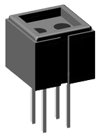
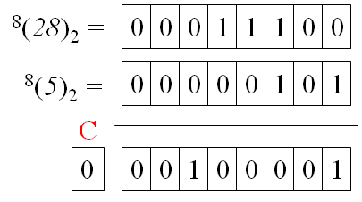
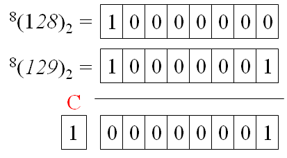
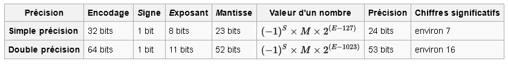
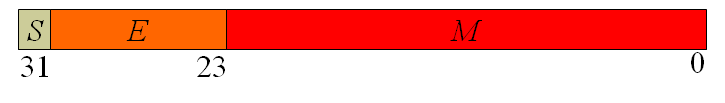

Introduction et notions de représentation de nombres
Cours Magistral 1/6
Table of Contents
Pourquoi la programmation informatique ?
Programmer un ordinateur ?
Programmer c'est de fournir à un ordinateur des instructions afin d'accomplir une tâche spécifique. Cela se fait en amont de l'exécution de la dite tâche qui se fait lors de l'éxécution du programme.
Comment indiquer à l'ordinateur de faire une tâche ?
→ On utilise un langage de programmation !
Dans ce module on utilise le langage de progammation Python.
Une analogie avec la musique
En pratique
Le programmeur écrit un programme
Le programme donne une liste d'instructions à la machine
Sauf que... l'ordinateur n'est pas très intelligent...
On passe par un interpréteur qui traduit un langage plus haut niveau en instructions simples
65+i
movq 8(%rbp), %rdx
movq $65, %rax
addq %rdx, %rax
Qu'est-ce qu'on peux faire avec ça ?
Réalisation de jeux vidéos..
Qu'est-ce qu'on peux faire avec ça ?
Digital art..
@ Robert Felker
→ https://www.youtube.com/watch?v=6avJHaC3C2U
Qu'est-ce qu'on peux faire avec ça ?
Boids: Simulation de comportement d'oiseaux/poissons
Permet une mise en œuvre rapide des idées (au prix de la performance)
Qu'est-ce qui différencie les langages de programmation?
Niveau d'abstraction de la machine
Le paradigme de programmation
Le type de "run time execution"
Les types de données built-in
Et beaucoup d'autres choses...
Niveau d'abstraction de la machine
Langages Machine / Assembly
High level languages
Graphical languages
More...
Le paradigme de programmation
Imperative
Declarative
Procedural
Object-Oriented
Event-Driven
Et bien d'autres... y compris des hybrides entre plusieurs types :)
Le type de "run time execution"
Tout code de tout type ou niveau doit être traduit en instructions que la machine peut exécuter
Compilation
Scripts
Write once, run anywhere (par exemple, Java)
Comment classer Python ?
High-level
Object-oriented
Script based
Représentation d'informations en informatique
Comment représenter de l'information dans un ordinateur ?
Un circuit électrique peut laisser passer ou non le courant électrique à l'aide de transistors.

L'état du transistor (laisser passer ou non) donne une information sur 1 bit.
Fonction de codage : $ f:\{On, Off\} \rightarrow \{0, 1\}.$
→ Il est nécéssaire de considérer un espace de représentation binaire et y associer un codage pour les éléments que l'on veut utiliser.
Exercice: plaque d'immatriculation
Depuis 2009, la France utilise un nouveau système de numérotation des véhicules.
Actuellement, les lettres I, O, U ne sont pas utilisées pour éviter les confusions avec, respectivement, 1, 0 et V. Le couple de lettres SS n’est ni utilisé à gauche, ni à droite. Le couple de lettres WW n’est pas utilisé à droite.
Avec ce système, combien de véhicules peut-on immatriculer ?
Si l’on affectait un code binaire à chaque véhicule pouvant être représenté selon ce code, combien de bits seraient nécessaires ?
En choisissant un code binaire pour chaque lettre et un code binaire pour le nombre, combien de bits seraient nécessaires ?
Sachant qu’il y avait environ 37 millions de véhicules immatriculés en 2009 et qu’il y a environ 3 millions de nouvelles immatriculations chaque année, quelle est la durée approximative de ce codage ?
Exercice plaque immatriculation
Solution question 1 : $N = (23^2-1)\times 1000\times (23^2-2)$.
Sachant qu’il y avait environ 37 millions de véhicules immatriculés en 2009 et qu’il y a environ 3 millions de nouvelles immatriculations chaque année, quelle est la durée approximative de ce codage ?
~85 000 ans
Quoi représenter pour faire de la programmation ?
Nombres : indispensables pour gérer tout problème de programmation...
Nombre entiers
Nombre entiers signés
Nombres à virgules
Chaîne de caractères : pouvoir afficher, gérer du texte, c'est utile...
Booléens : pour des valeurs de Vrai/Faux
→ Il faut trouver une représentation de ces éléments en codage binaire !
Notions de codage de nombre
Un peu de théorie sur la représentation de nombres i
Un nombre est représenté par une suite de chiffres lus de gauche à droite. Pour un nombre exprimé en base $B$, chaque chiffre appartient à un ensemble de $B$ symboles distincts.
Exemples :
En base 2 : $x \in \{0,1\}$
En base 10 : $x \in \{0, 1, 2, 3, 4, 5, 6, 7, 8, 9 \}$
En base 8 : $x\in\{0,1,2,3,4,5,6,7\}$
En base 16 : $x \in \{0,1,2,3,4,5,6,7,8,9,A,B,C,D,E,F\}$
Un peu de théorie sur la représentation de nombres ii
Soit $N_{10}=9_{10}$, en base $10$ (dénoté par l'indice), on peut avoir le même nombre dans les autres représentations:
En base 2 : $N_2 = 1001_2$
En base 8 : $N_8 = 11_2$
En hexadécimal : $N_{16} = 9_{16}$
→ Comment à partir d'une représentation dans une base $B$ quelconque, on revient à une base 10 ?
Hint : Comment est construit le code d'un nombre en base 10 ?
Conversion de base $B$ à la base 10
Soit $N_B = x_{n-1}...x_2x_1x_0\ _B$ un nombre en base $B$ donné sur $n$ chiffres. On obtient le codage de ce nombre en base $10$ par la formule :
\[
(N_B)_{10} = p_{n-1}.B^{n-1} +...+ p_2.B^2+p_1.B^1+p_0.B^0
\]
Exercice :
Soient $T=323_8$, $U=323_{16}$, $V = 1AF_{16}$ et $W=323_3$. Comment s’écrivent respectivement ces nombres en base $10$ ?
Conversion de la base 10 à une base $B$
Soit $N_{10} = x_{n-1}...x_2x_1x_0\ _B$ un nombre en base $10$ donné sur $n$ chiffres. Comment obtenir le codage de ce nombre dans une base quelconque $B$ ?
On a vu que si $N_B = x_{n-1}...x_2x_1x_0\ _B$ sa conversion en base 10 est $(N_B)_{10} = p_{n-1}.B^{n-1} +...+ p_2.B^2+p_1.B^1+p_0.B^0$.
Quelle information fournit la division euclidienne de $(N_B)_{10}$ par $B$ ?
En déduire un principe général de conversion d'un nombre en base 10 vers une base quelconque.
On écrira $^P(N_A)_B$ la conversion du nombre $N$ exprimé en base $A$ vers la base $B$ sur $P$ chiffres.
Conversion de base $10$ à base $B$
Exemple avec $N_{10} = 783$ :
$783 = 2 \times 391 + 1$
$391 = 2 \times 195 + 1$
$195 = 2 \times 94 + 1$
$97 = 2 \times 48 + 1$
$48 = 2 \times 24 + 0$
$24 = 2 \times 12 + 0$
$12 = 2 \times 6 + 0$
$6 = 2 \times 3 + 0$
$3 = 2 \times 1 + 1$
$1 = 2 \times 0 + 1$
$N_2 = 1100001111$
Opérations sur les nombres en machine: Addition
Principe d'addition en base $B$
D’une manière générale, dans une base quelconque, l’addition s’effectue dans la base, chiffres par chiffres, en commençant par le chiffre de plus faible poids et en propageant la retenue. On notera $+_B$, l’addition dans la base $B$.
$81_{10}+_{10}89_{10}=170_{10}$
$81_{16} +_{16} 89_{16} = 10A_{16}$
$00101_{2} +_{2} 01110_{2} = 10011_{2}$
Problème du débordement en programmation !
Principe du débordement (1/2)
Soient $U = 28$ et $V=5$ représentés sur $8$ bits:

Principe du débordement (2/2)
Soient $U = 128$ et $V=129$ représentés sur $8$ bits:

Conséquences du débordement: le cas Ariane...
Nombres signés
Nombre signés
Jusque maintenant, nos avons considéré des nombres non-signés (cad positifs). On peut se poser la question de comment représenter les nombres signés
Imaginons que je veux représenter $N=-5$, comment obtenir un code qui le différentie de $M=5$ ?
Une solution imparfaite
Idée :
On utilise un bit supplémentaire pour coder le signe !
Exemple :
$^8(5_{10})_2 = $ $0$ $0000$ $0101_2$
$^8(-5_{10})_2 = $ $1$ $0000$ $0101_2$
→ Quels sont les inconvénients de cette approche ?
Un bit supplémentaire nécéssaire
Addition ne se fait pas naturellement : $^8(5_{10} + -5_{10})_2 = 0$ $0000$ $0000_2$, mais$^8(5_{10})_2$ + $^8(-5_{10})_2 = $ $1$ $0000$ $1010_2$.
Le code complément
Considérons que nous disposons de 4 bits, soit 16 codes possibles. On réserve la moitié des codes pour les nombres positifs en utilisant la fonction de codage des nombres entiers non signés soit $^4(N_{10})_2$.
Les nombres positifs vont donc de $0$ à $7$.
Les 8 codes restants sont utilisés pour représenter les nombres strictement négatifs. On ira donc de -8 à -1.
Quels avantages ?
Une représentation pour le $0$.
Addition naturelle conservée... grâce au débordement
Exemple pratique en base $B=10$
Considérons des nombres écrits sur $4$ chiffres en base $10$ :
le nombre 0 s’écrit 0000
le nombre 3 s’écrit 0003
le plus grand nombre positif représentable est 4999 qui s’écrit 4999.
Soit $^4(3_{10})$, comment obtenir $^4(-3_{10})$ ?
Dans une représentation en base 2 sur 8 bits, donner le code de 3 puis le code de -3.
Dans une représentation en base 4 sur 3 chiffres, donner le code de 3 puis de -3.
De manière générale : $^P(-N)_B = {^P(B^P - N)_B}$
Obtenir le code de l'opposé en pratique : le complément
Chiffre :
Soit $x_B$ un chiffre en base $B$, on définit son complément à la base $B$ avec la notation $x_B^*$ par:
$x_B +_B x^*_B = (B - 1)_B$
Nombre : Soit $^P(N)_B=x_{n-1}\dots x_{0}$ en base $B$ sur $P$ chiffres. On définit le complément à la base $B$ par :
$^P(N)_B^* = x_{n-1}^*\dots x_{0}^*$
Exemple en base 2 :
Code complément de $^8(5_{10})_2$ ?
En déduire comment obtenir l'opposé en base 2 rapidement
$^P(-N)_B = {^P(N)_B^*} +_B 1$
Exercice à la maison
Calculer le code de $-128$ en base $2$ sur $8$ bits.
Calculer le code de $-3$ en base $16$ sur $4$ chiffres.
Si $X$ est la conversion d'un nombre négatif, c'est-à-dire $X = ^P(-N)_B=^P(N)_B^* +_B $, que vaut $X^* +_B 1$ ? Vérifier le résultat sur la question précédente.
Nombres flottants
Nombre à virgule en base $B$
Soit $N_B=x_n\dots x_1x_0.x_{-1}\dots x_{-m}$, on a :
$(N_B)_{10}=\displaystyle\sum_{k=-m}^{n}p_kB^k$ où $p_k$ est le poids de $x_k$ dans la base $B$.
Exemple d'un nombre en base 10 :
Exemple d'un nombre en base 2 :
Exemple d'un nombre en base 16 :
Format IEEE 754
Format le plus couremment utilisé:

→ Géré par la pluspart des processeurs pour faire des calculs.
En simple précision, ce qui est codé dans la machine :

Chaîne de caractères
Représentation ASCII
Acronyme pour American Standard Code for Information Interchange. On code les caractères avec un code sur 8 bits :
ASCII chart from a pre-1972 printer manual @Wikipedia
Autre format : Unicode
Exercice: plaque d'immatriculation
Depuis 2009, la France utilise un nouveau système de numérotation des véhicules.
Actuellement, les lettres I, O, U ne sont pas utilisées pour éviter les confusions avec, respectivement, 1, 0 et V. Le couple de lettres SS n’est ni utilisé à gauche, ni à droite. Le couple de lettres WW n’est pas utilisé à droite.
Si l’on affectait un code binaire à chaque véhicule pouvant être représenté selon ce code, combien de bits seraient nécessaires ?
En choisissant un code binaire pour chaque lettre et un code binaire pour le nombre, combien de bits seraient nécessaires ?
En pratique
Types natifs en Python
Booléens : bool
Nombre entiers signés : int
Nombre flottants : float (double précision)
Chaines de caractères (séquence de codes pour chaque lettre): str
D'autres types peuvent être obtenus à l'aide de librairies externes


:format(webp):no_upscale()/cdn.vox-cdn.com/uploads/chorus_asset/file/20012300/90774293.jpg.jpg)

 @ Robert Felker
@ Robert Felker